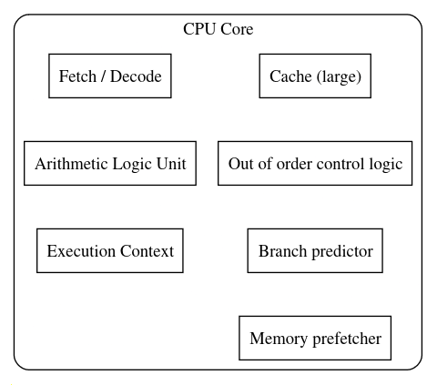
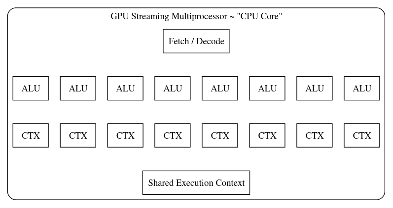
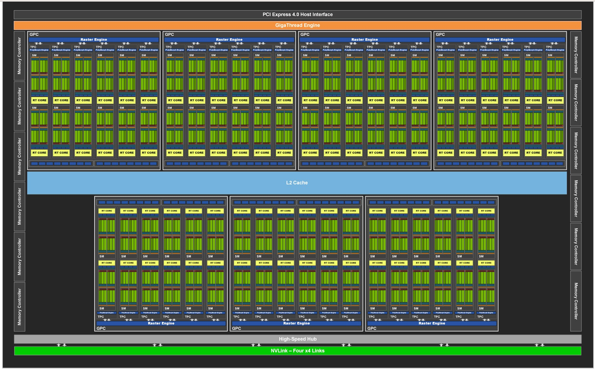
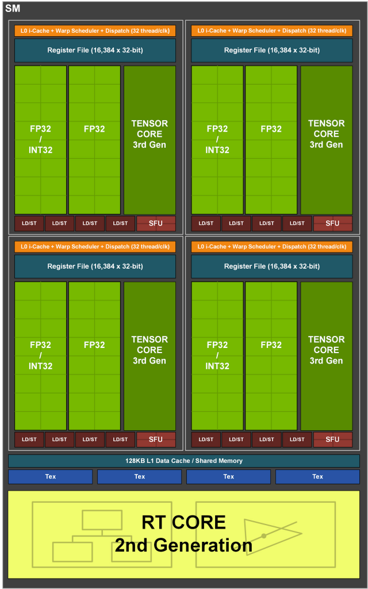
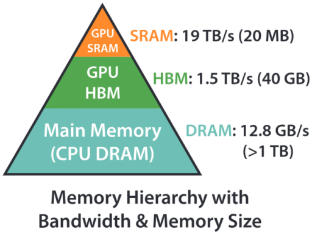
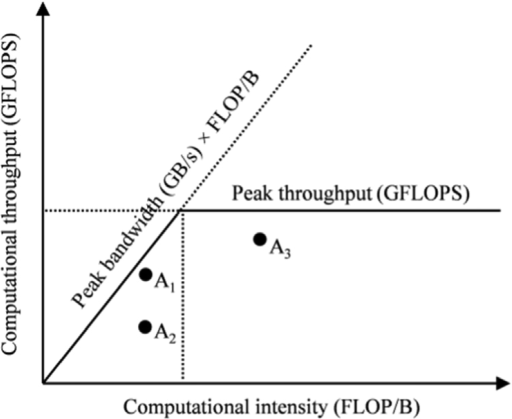
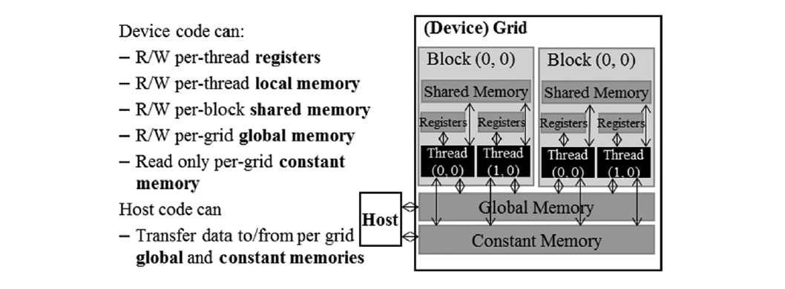

GPU MODE Lecture 4: Compute and Memory Basics
- GPU MODE Lecture Notes: My notes from the GPU MODE reading group lectures run by Andreas Kopf and Mark Saroufim.
- Compute Architecture and Scheduling
- Memory Architecture and Data Locality
- Conclusions and Key Takeaways
- YouTube Recording: Lecture 4 Compute and Memory Basics
- Jupyter Notebook: lecture_004/cuda-mode-session-4.ipynb
- Paper: GA102 Whitepaper
Compute Architecture and Scheduling
GPU Architecture vs. CPU
- CPUs:
- Complex cores with multiple specialized units (fetch, decode, ALU).
- Typically, one or few Arithmetic Logic Units (ALUs) per core. 
- GPUs:
- Streaming Multiprocessors (SMs) with many ALUs.
- Threads share context and resources within an SM.
- Each thread has its own program counter in newer GPUs (e.g., Volta and later).
- Older GPUs shared program counters among threads in a warp. 
GPU Architecture Details (RTX 3090 Example)

Note: The GA102 GPU also features 168 FP64 units (two per SM), which are not depicted in this diagram. The FP64 TFLOP rate is 1/64th the TFLOP rate of FP32 operations. The small number of FP64 hardware units are included to ensure any programs with FP64 code operate correctly, including FP64 Tensor Core code.
- Streaming Multiprocessors (SMs):
- RTX 3090 has 82 SMs.
- SMs are largely independent.
- Share a common L2 cache.
- Floating-Point Cores:
- Consumer GPUs lack dedicated FP64 cores.
- RTX 3090 has a limited FP64 rate (1/64th of FP32).
- Accidental use of FP64 constants can significantly slow down computation.
- Streaming Multiprocessor Structure:
- Each SM has four units, each with:
- Register file.
- Scheduling and dispatch unit (32 threads/clock).
- Compute units: 32 FP32 units (half can do INT32).
- Tensor cores.
- Each SM has four units, each with:

- Kernel Execution:
- Thread blocks are assigned to SMs (no user control over assignment).
- Multiple blocks can be assigned to one SM if resource limits allow.
- RTX 3090 can handle up to 1536 threads per SM.
- Ideal block size divides 1536 (e.g., 256 or 512).
- Warp Execution:
- Each SM processes one warp (32 threads) at a time.
- Warp divergence occurs when threads within a warp are not in sync, leading to partial execution.
- Registers:
- Shared register file (64K 32-bit registers per SM).
- Registers are not cleared when switching between warps, requiring careful management of register usage.
- L1 Cache and Shared Memory:
- 128KB of on-chip memory per SM, split between L1 cache and shared memory.
Threads, Warps, and Blocks
- Kernel Launch: Defined by block layout (threads per block) and grid layout (number of blocks).
- Thread Block:
- Assigned to a single SM.
- Threads within a block execute in parallel on the same SM.
- Threads within a block can access shared memory.
- Blocks:
- Independent of each other.
- CUDA assigns blocks to SMs arbitrarily (no programmer control).
- Execution order of blocks is not guaranteed.
- SM Thread Capacity:
- SMs can process more threads than the maximum threads in a block.
- Multiple blocks can be assigned to a single SM, if resource limits allow.
- Example (RTX 3090): Maximum 1536 threads per SM.
- Recommendation: Choose block sizes (e.g., 256, 512) that divide the maximum thread capacity for optimal SM utilization.
- Warp:
- A group of 32 threads.
- SMs process one warp at a time.
- Warp Divergence: Occurs when threads within a warp follow different execution paths (e.g., due to conditional statements).
- Leads to reduced performance as only a subset of threads in a warp execute at a time.
- AMD Terminology:
- Wavefronts: AMD’s term for warps.
- Typically 64 threads, but can be reduced to 32 via compiler options.
Multi-Dimensional Thread Grids
Linearization: Multi-dimensional thread grids are linearized for execution.
Thread Index Order:
threadIdx.xis the fastest moving dimension, followed bythreadIdx.y, and thenthreadIdx.z.Example: An
8x8x8thread block:# CUDA kernel and C++ function declaration cuda_src = """ #include <c10/cuda/CUDAException.h> /** * CUDA kernel to compute thread indices of neighbors in a 3D grid. * * @param out Pointer to output array where neighbor indices will be stored. */ __global__ void thread_idx_of_neighbors_kernel(int32_t* out) { // Grid dimensions: 8x8x8 threads per block, 32 neighbors per thread, 3 coordinates per neighbor int x = threadIdx.x; int y = threadIdx.y; int z = threadIdx.z; // Iterate over all 32 threads in the warp for (int i = 0; i < 32; i++) { // Use warp shuffle to get coordinates of other threads int other_x = __shfl_sync(0xffffffff, x, i); int other_y = __shfl_sync(0xffffffff, y, i); int other_z = __shfl_sync(0xffffffff, z, i); // Calculate offset in output array and store neighbor coordinates int offset = z * 8*8*32*3 + y * 8*32*3 + x * 32*3 + i*3; out[offset] = other_x; out[offset + 1] = other_y; out[offset + 2] = other_z; } } /** * C++ wrapper function to launch the CUDA kernel and return results as a Torch tensor. * * @return torch::Tensor A 5D tensor containing thread indices of neighbors. */ torch::Tensor thread_idx_of_neighbors() { // Create output tensor: 8x8x8 threads, 32 neighbors, 3 coordinates auto output = torch::empty({8, 8, 8, 32, 3}, torch::TensorOptions().device(torch::kCUDA).dtype(torch::kInt)); // Set up kernel launch parameters dim3 block(8, 8, 8); dim3 grid(1); // Launch kernel thread_idx_of_neighbors_kernel<<<grid, block>>>(output.data_ptr<int32_t>()); // Check for CUDA errors C10_CUDA_KERNEL_LAUNCH_CHECK(); return output; } """# C++ function declaration cpp_src = """ torch::Tensor thread_idx_of_neighbors(); """# Load the CUDA kernel and C++ function as a PyTorch extension thread_idx_of_neighbors_module = torch.utils.cpp_extension.load_inline( "test_thread_idx", # Name of the extension cpp_src, # C++ source code cuda_src, # CUDA source code functions=['thread_idx_of_neighbors'], # List of functions to expose extra_cuda_cflags=['--ptxas-options=-v'], # Additional CUDA compiler flags verbose=True # Enable verbose output during compilation )- Threads within a warp have consecutive
threadIdx.xvalues. threadIdx.ychanges less frequently thanthreadIdx.x.threadIdx.zchanges least frequently.
- Threads within a warp have consecutive
Verification: Kernel code demonstrates thread indexing using shuffle instructions.
# Call the CUDA kernel through the PyTorch extension t = thread_idx_of_neighbors_module.thread_idx_of_neighbors() # Access the first element of the result tensor t[0,0,0]tensor([[0, 0, 0], [1, 0, 0], [2, 0, 0], [3, 0, 0], [4, 0, 0], [5, 0, 0], [6, 0, 0], [7, 0, 0], [0, 1, 0], [1, 1, 0], [2, 1, 0], [3, 1, 0], [4, 1, 0], [5, 1, 0], [6, 1, 0], [7, 1, 0], [0, 2, 0], [1, 2, 0], [2, 2, 0], [3, 2, 0], [4, 2, 0], [5, 2, 0], [6, 2, 0], [7, 2, 0], [0, 3, 0], [1, 3, 0], [2, 3, 0], [3, 3, 0], [4, 3, 0], [5, 3, 0], [6, 3, 0], [7, 3, 0]], device='cuda:0', dtype=torch.int32)
Warp Divergence and Control Flow
- Traditional GPUs (Single Program Counter per Warp):
- Conditional Statements (if-else): Threads not satisfying the condition are disabled, leading to warp divergence.
- Only the active threads execute the corresponding branch.
- Threads are re-enabled/disabled as needed at each branch point.
- Limitations:
- Inter-thread communication within a warp is not possible during divergence (waiting threads would stall the warp).
- Performance is reduced due to idle threads and sequential execution of branches.
- Newer GPUs (>= Volta) (Independent Program Counters):
- Each thread has its own program counter.
- GPU can interleave execution of different branches, improving utilization.
- Advantages:
- Can hide memory latency by switching to other warps while one warp waits for memory access.
- Disadvantages:
- Reconvergence of threads after divergence is not automatic.
- Requires explicit synchronization using
__syncwarp()to ensure all threads are at the same point before continuing.
- Loop Divergence: Similar divergence occurs in loops with variable iteration counts across threads in a warp.
Achieving Good Occupancy
- Occupancy: A measure of how well the GPU’s resources are utilized.
- Goals:
- Keep all SMs busy.
- Maximize the number of active threads per SM.
- Minimize warp divergence.
- Avoid slow FP64 and INT64 operations (especially on consumer GPUs).
- Strategies:
- Many Blocks: Utilize all available SMs.
- Optimal Block Size: Choose a power of two smaller than 512 (or a divisor of the maximum threads per SM) to maximize concurrent threads.
- Minimize Divergence:
- Use conditional load/store instructions to avoid control flow divergence.
- Structure code to minimize branching within warps.
- Avoid FP64/INT64: Use FP32/INT32 whenever possible for better performance.
- Shared Memory and Registers:
- Excessive use of shared memory or registers can limit the number of threads scheduled per SM.
- Launch Bounds: Use
__launch_bounds__to advise the compiler about expected thread counts, allowing for better register allocation. - Register Spills: If register usage exceeds the limit, variables are spilled to slower local memory, impacting performance.
- Occupancy Calculation Tools:
- Previously: Excel sheets.
- Currently: NVIDIA Nsight Compute provides occupancy analysis.
Querying GPU Properties
- PyTorch:
torch.cuda.get_device_properties(device)provides basic properties (name, compute architecture, memory, processor count, registers per SM, max threads per SM). - CUDA C API: More detailed properties are available through the CUDA Runtime API.
Memory Architecture and Data Locality
Performance Bottlenecks
- Memory Accesses: Often a major bottleneck in kernel performance.
- Kernel Fusion: Combining multiple kernels into one can reduce memory transfers by avoiding intermediate reads and writes.
PyTorch Performance Breakdown
High-Level:
- Python processing.
- Data administrative overhead (tensor allocation, etc.).
- Data acquisition.
- GPU computation.
Data Acquisition: Often a significant bottleneck if not optimized.
GPU Computation:
- Fixed costs (kernel launches).
- Memory accesses (reading inputs, writing outputs).
- Actual computation (influenced by occupancy).
Rules of Thumb:
As long as you don’t have close to 100% GPU utilization in nvidia-smi, work on data acquisition etc.
As long as you have Tensors with a few 100s of elements, “Python is slow” and data administrative over head is single digit percentages.
Algorithms also matter (parallel algorithms in the following chapters)
Memory Access as a Bottleneck
- Eager PyTorch: Typically loads inputs, computes, and stores outputs for each operation.
- Fusion Benefits: Reduces memory transfers by combining multiple operations into a single kernel.
- PyTorch JIT:
- First generation: Fused point-wise operations.
- Second generation (NVFuser): Added support for contractions.
- NVFuser:
- Evolved beyond PyTorch.
- Active git repository with ongoing development.
- GitHub Repository: https://github.com/NVIDIA/Fuser
- Inductor and Triton: Support more complex operations through a specialized language and templates.
- Flash Attention: Minimizes global memory accesses by leveraging shared memory effectively.
Flash Attention Example

- Paper: FlashAttention: Fast and Memory-Efficient Exact Attention with IO-Awareness
- Figure: (from the Flash Attention paper) Shows the relative speeds of different memory types.
- High Bandwidth Memory (HBM): 1.5 TB/s (900 GB/s on the RTX 3090).
- Shared Memory: More than 10x faster than HBM.
- Shared Memory Limitation: Significantly smaller capacity (0.2% of global memory).
- Goal: Minimize global memory accesses and maximize shared memory usage.
Kernel Fusion Example: Approximated Gelu
Approximated Gelu Formula: (from PyTorch documentation) Uses
tanhfor an approximation of the Gaussian error linear unit (GELU) activation function. \[ \text{GELU}(x) = 0.5 * x * (1 + \text{Tanh}(\sqrt{2 / \pi} * (x + 0.044715 * x^3))) \]PyTorch Implementation: Highly optimized, around 13.3 microseconds.
%timeit torch.nn.functional.gelu(x, approximate='tanh'); torch.cuda.synchronize()13.3 μs ± 331 ns per loop (mean ± std. dev. of 7 runs, 100,000 loops each)Naive Implementation:
def gelu(x): """ Compute the Gaussian Error Linear Unit (GELU) activation function. GELU is defined as: GELU(x) = 0.5 * x * (1 + tanh(sqrt(2/pi) * (x + 0.044715 * x^3))) Args: x (torch.Tensor): Input tensor Returns: torch.Tensor: Output tensor after applying GELU activation """ # Calculate the constant term (2/pi)^0.5 const = (2 / torch.pi) ** 0.5 # Compute the inner term: x + 0.044715 * x^3 inner_term = x + 0.044715 * x**3 # Apply the GELU formula return 0.5 * x * (1 + torch.tanh(const * inner_term))# Create a random tensor of size 1024x1024 on the GPU x = torch.randn(1024, 1024, device="cuda")# Measure the execution time of the GELU function # Synchronize CUDA operations to ensure accurate timing %timeit gelu(x); torch.cuda.synchronize()67.2 μs ± 1.41 μs per loop (mean ± std. dev. of 7 runs, 10,000 loops each)- Separate kernels for each operation.
- Significantly slower due to numerous memory accesses.
PyTorch Profiler: Can be used to identify individual kernel calls and their execution times.
# Use torch.profiler to analyze the performance of the GELU function with torch.profiler.profile() as prof: # Measure the execution time of the GELU function # Run the function 1000 times for more accurate timing %timeit -n 1000 gelu(x) # Print a table of key performance metrics print(prof.key_averages().table())Name Self CPU % Self CPU CPU total % CPU total CPU time avg Self CUDA Self CUDA % CUDA total CUDA time avg # of Calls aten::mul 30.34% 130.980ms 50.70% 218.874ms 7.817us 88.571ms 49.36% 88.571ms 3.163us 28000 cudaLaunchKernel 37.49% 161.833ms 37.49% 161.833ms 2.890us 0.000us 0.00% 0.000us 0.000us 56000 aten::pow 9.45% 40.780ms 14.16% 61.140ms 8.734us 20.920ms 11.66% 20.920ms 2.989us 7000 aten::result_type 0.18% 785.257us 0.18% 785.257us 0.112us 0.000us 0.00% 0.000us 0.000us 7000 aten::to 0.14% 603.008us 0.14% 603.008us 0.086us 0.000us 0.00% 0.000us 0.000us 7000 aten::add 15.28% 65.959ms 23.82% 102.833ms 7.345us 46.930ms 26.16% 46.930ms 3.352us 14000 aten::tanh 7.13% 30.763ms 11.32% 48.857ms 6.980us 23.008ms 12.82% 23.008ms 3.287us 7000 void at::native::vectorized_elementwise_kernel<4, at… 0.00% 0.000us 0.00% 0.000us 0.000us 62.472ms 34.82% 62.472ms 2.975us 21000 void at::native::vectorized_elementwise_kernel<4, at… 0.00% 0.000us 0.00% 0.000us 0.000us 20.920ms 11.66% 20.920ms 2.989us 7000 void at::native::vectorized_elementwise_kernel<4, at… 0.00% 0.000us 0.00% 0.000us 0.000us 26.045ms 14.52% 26.045ms 3.721us 7000 void at::native::vectorized_elementwise_kernel<4, at… 0.00% 0.000us 0.00% 0.000us 0.000us 23.008ms 12.82% 23.008ms 3.287us 7000 void at::native::vectorized_elementwise_kernel<4, at… 0.00% 0.000us 0.00% 0.000us 0.000us 20.886ms 11.64% 20.886ms 2.984us 7000 void at::native::vectorized_elementwise_kernel<4, at… 0.00% 0.000us 0.00% 0.000us 0.000us 26.099ms 14.55% 26.099ms 3.728us 7000 cudaDeviceSynchronize 0.00% 5.062us 0.00% 5.062us 5.062us 0.000us 0.00% 0.000us 0.000us 1 Self CPU time total: 431.709ms
Self CUDA time total: 179.430ms
- Shows a large number of separate kernels for point-wise operations in the naive implementation.
Fused Kernel:
# Define CUDA source code as a string cuda_src = cuda_begin + r''' __global__ void my_gelu_kernel(float* out, float* inp, int n) { // Calculate global thread index int i = blockIdx.x * blockDim.x + threadIdx.x; // Return if thread index is out of bounds if (i >= n) return; // Load input value float x = inp[i]; // Compute GELU (Gaussian Error Linear Unit) activation // GELU(x) = 0.5 * x * (1 + tanh(sqrt(2/π) * (x + 0.044715 * x^3))) out[i] = 0.5f * x * (1.0f + tanhf(sqrtf(2.0f/3.141592653589793f) * (x + 0.044715f * (x*x*x)))); } torch::Tensor my_gelu_out(torch::Tensor output, const torch::Tensor& inp) { CHECK_INPUT(inp); // Validate input tensor int n = inp.numel(); // Get total number of elements in input tensor // Ensure output tensor has same properties as input tensor TORCH_CHECK((output.sizes() == inp.sizes()) || (output.device() == inp.device()) || (output.scalar_type() == inp.scalar_type())); int threads = 256; // Set number of threads per block // Launch CUDA kernel my_gelu_kernel<<<cdiv(n, threads), threads>>>( output.data_ptr<float>(), inp.data_ptr<float>(), n); C10_CUDA_KERNEL_LAUNCH_CHECK(); // Check for CUDA errors return output; } torch::Tensor my_gelu(const torch::Tensor& inp) { CHECK_INPUT(inp); // Validate input tensor auto output = torch::empty_like(inp); // Create output tensor with same properties as input my_gelu_out(output, inp); // Compute GELU activation return output; } ''' # Define C++ source code as a string cpp_src = """ torch::Tensor my_gelu(const torch::Tensor& inp); torch::Tensor my_gelu_out(torch::Tensor output, const torch::Tensor& inp); """ # Set environment variables for compiler paths import os os.environ['CXX'] = '/usr/lib/ccache/g++-11' os.environ['CC'] = '/usr/lib/ccache/gcc-11' # Load and compile the CUDA extension gelu_module = torch.utils.cpp_extension.load_inline( "test_ext_gelu", # Name of the extension cpp_src, # C++ source code cuda_src, # CUDA source code functions=['my_gelu', 'my_gelu_out'], # Functions to expose extra_cuda_cflags=['--ptxas-options=-v'], # Additional CUDA compiler flags verbose=True # Enable verbose output during compilation )%timeit gelu_module.my_gelu(x); torch.cuda.synchronize()17 μs ± 246 ns per loop (mean ± std. dev. of 7 runs, 100,000 loops each)- Combines all operations into a single C++ kernel.
- Slightly slower than PyTorch’s implementation (tested on an RTX 4090 with PyTorch 2.4.0).
Numerical Accuracy: Results are the same as PyTorch’s implementation, “up to numerical accuracy.”
Numerical Accuracy and Floating Point Operations
- Floating Point Addition: Not strictly associative due to limited precision.
- The order of operations can affect the result, especially when adding numbers with vastly different magnitudes.
- Example: Adding a very small number to a large number might result in no change if the small number is below the precision threshold.
- Relative Accuracy:
- FP32: Typically around 10⁻⁷ or 10⁻⁸.
- FP64: Higher precision.
Theoretical Maximum Speed: Level RGB to Gray Kernel
- Kernel Operations:
- Load 3 bytes (R, G, B).
- Compute index (1 multiplication, 1 addition - INT32).
- Compute grayscale value (3 multiplications, 2 additions - FP32).
- Data conversion.
- Store 1 byte.
- Memory Bandwidth (RTX 3090): 900 GB/s.
- Image Size: 2048 x 2048.
- Theoretical Memory Transfer Time (“Speed of Light”): ~18 microseconds (assuming ideal access patterns).
- Compute Performance (RTX 3090):
- FP32: 35.6 TFLOPs.
- INT32: 16.8 TFLOPs.
- Theoretical Compute Time: ~2 microseconds (excluding parallelism and memory latency).
- Kernel Launch Overhead: ~3 microseconds (measured using an empty kernel).
- Measured Kernel Time: ~26-27 microseconds.
- Efficiency: Achieves about 75% of the theoretical maximum speed.
Roofline Model

- Purpose: Helps analyze the performance limitations of a kernel.
- Computational Intensity: Key metric, defined as the number of floating-point operations (FLOPs) per byte of memory transfer.
- Memory-Bound Kernels:
- Low computational intensity.
- Performance limited by memory bandwidth.
- Throughput limited by the diagonal line in the roofline model representing memory bandwidth.
- Compute-Bound Kernels:
- High computational intensity.
- Performance limited by the GPU’s compute capabilities.
- Throughput limited by the horizontal line in the roofline model representing peak compute performance.
- Roofline Shape: The characteristic “roof” shape arises from the fact that memory latency can be hidden if other warps can compute while one warp waits for memory.
- The performance becomes the maximum of the memory bandwidth and compute throughput, leading to the minimum of the two limiting factors.
GPU Memory Hierarchy

| Variable declaration | Memory | Scope | Lifetime |
|---|---|---|---|
| Automatic variables other than arrays | Register | Thread | Grid |
| Automatic array variables | Local | Thread | Grid |
__device__ __shared__ int SharedVar; |
Shared | Block | Grid |
__device__ int GlobalVar; |
Global | Grid | Application |
__device__ __constant__ int ConstVar; |
Constant | Grid | Application |
- Registers: Fastest, used for local variables within a thread.
- Local Memory: Slower than registers, used for arrays declared within a thread or for register spills.
- Shared Memory: Per-block memory, faster than global memory, accessible by all threads in a block, declared using
__shared__. - Global Memory: Main GPU memory, accessible by all threads, typically accessed through pointers.
- Constant Memory: Read-only memory, cached, used for kernel launch parameters and can be explicitly declared.
Future Considerations
- Thread Coarsening:
- Concept: Increasing the amount of work done by each thread to improve performance.
- Application to Tiling: Allows for larger tile sizes.
- Details: Covered in the next session.
- Flash Attention Implementation:
- Exercise: Implement the original Flash Attention algorithm from scratch based on the pseudocode.
- Key Aspect: Blocking of inputs and output for efficient kernel fusion.
Conclusions and Key Takeaways
GPU Computation:
- GPUs use a hierarchy of threads, warps, and blocks to organize computation.
- Understanding the hardware architecture and scheduling is crucial for performance optimization.
- Occupancy, a measure of resource utilization, should be maximized.
- Thread divergence should be minimized.
Memory Management:
- Memory accesses are often a major bottleneck.
- Kernel fusion can reduce memory transfers.
- The roofline model provides insights into the performance limitations of a kernel.
- Tiling is a powerful technique to improve data locality by leveraging shared memory.
Next Steps:
- The next chapter will focus on coalesced memory access, a technique to optimize global memory reads and writes for maximum efficiency.
I’m Christian Mills, a deep learning consultant specializing in practical AI implementations. I help clients leverage cutting-edge AI technologies to solve real-world problems.
Interested in working together? Fill out my Quick AI Project Assessment form or learn more about me.